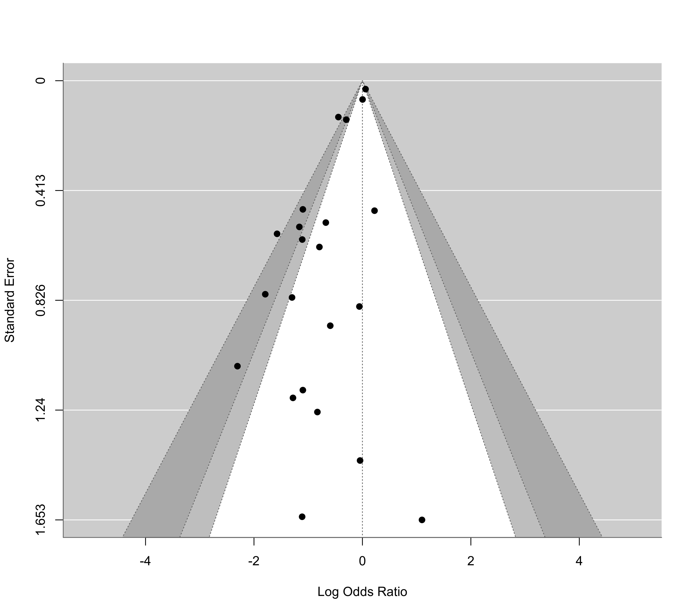

dat.li2007.RdResults from 22 trials examining the effectiveness of intravenous magnesium in the prevention of death following acute myocardial infarction.
dat.li2007The data frame contains the following columns:
| id | numeric | trial id number |
| study | character | first author or trial name |
| year | numeric | publication year |
| ai | numeric | number of deaths in the magnesium group |
| n1i | numeric | number of patients in the magnesium group |
| ci | numeric | number of deaths in the control group |
| n2i | numeric | number of patients in the control group |
The dataset includes the results from 22 randomized clinical trials that examined the effectiveness of intravenous magnesium in the prevention of death following acute myocardial infarction. It is similar to the dataset dat.egger2001, with some slight differences in the included trials and data used.
Li, J., Zhang, Q., Zhang, M., & Egger, M. (2007). Intravenous magnesium for acute myocardial infarction. Cochrane Database of Systematic Reviews, 2, CD002755. https://doi.org/10.1002/14651858.CD002755.pub2
medicine, cardiology, odds ratios, publication bias
### copy data into 'dat' and examine data
dat <- dat.li2007
dat
#> id study year ai n1i ci n2i
#> 1 1 Morton 1984 1 40 2 36
#> 2 2 Rasmussen 1986 4 56 14 74
#> 3 3 Smith 1986 2 92 7 93
#> 4 4 Abraham 1987 1 48 1 46
#> 5 5 Ceremuzynski 1989 1 25 3 23
#> 6 6 Shechter 1990 1 50 9 53
#> 7 7 Singh 1990 6 81 11 81
#> 8 8 Feldstedt 1991 10 150 8 148
#> 9 9 Shechter 1991 2 21 4 25
#> 10 10 Woods 1992 90 1150 118 1150
#> 11 11 Wu 1992 5 125 12 102
#> 12 12 Thogersen 1995 4 130 8 122
#> 13 13 Shechter 1995 4 96 17 98
#> 14 14 ISIS-4 1995 2216 29011 2103 29039
#> 15 15 Bhargava 1995 3 40 3 38
#> 16 16 Urek 1996 1 31 0 30
#> 17 17 Raghu 1999 6 169 18 181
#> 18 18 MAGIC 2000 475 3113 472 3100
#> 19 19 Gyamlani 2000 2 50 10 50
#> 20 20 Santoro 2000 0 75 1 75
#> 21 21 Zhu 2002 101 1691 134 1488
#> 22 22 Nakashima 2004 1 89 3 91
### load metafor package
library(metafor)
### meta-analysis of all trials except ISIS-4
res <- rma(measure="OR", ai=ai, n1i=n1i, ci=ci, n2i=n2i, data=dat, method="EE", subset=-14)
print(res, digits=2)
#>
#> Equal-Effects Model (k = 21)
#>
#> I^2 (total heterogeneity / total variability): 51.43%
#> H^2 (total variability / sampling variability): 2.06
#>
#> Test for Heterogeneity:
#> Q(df = 20) = 41.18, p-val < .01
#>
#> Model Results:
#>
#> estimate se zval pval ci.lb ci.ub
#> -0.20 0.05 -3.64 <.01 -0.31 -0.09 ***
#>
#> ---
#> Signif. codes: 0 ‘***’ 0.001 ‘**’ 0.01 ‘*’ 0.05 ‘.’ 0.1 ‘ ’ 1
#>
predict(res, transf=exp, digits=2)
#>
#> pred ci.lb ci.ub
#> 0.82 0.74 0.91
#>
### meta-analysis of all trials including ISIS-4
res <- rma(measure="OR", ai=ai, n1i=n1i, ci=ci, n2i=n2i, data=dat, method="EE")
print(res, digits=2)
#>
#> Equal-Effects Model (k = 22)
#>
#> I^2 (total heterogeneity / total variability): 63.61%
#> H^2 (total variability / sampling variability): 2.75
#>
#> Test for Heterogeneity:
#> Q(df = 21) = 57.72, p-val < .01
#>
#> Model Results:
#>
#> estimate se zval pval ci.lb ci.ub
#> -0.01 0.03 -0.25 0.80 -0.06 0.05
#>
#> ---
#> Signif. codes: 0 ‘***’ 0.001 ‘**’ 0.01 ‘*’ 0.05 ‘.’ 0.1 ‘ ’ 1
#>
predict(res, transf=exp, digits=2)
#>
#> pred ci.lb ci.ub
#> 0.99 0.94 1.05
#>
### contour-enhanced funnel plot centered at 0
funnel(res, refline=0, level=c(90, 95, 99), shade=c("white", "gray", "darkgray"))
